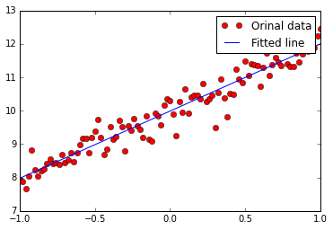

线性回归 (Linear Regression)


|
w should be something around [2]: [ 2.00981951]
b should be something around [10]: [ 9.98865509]

多变量线形回归（Multi-variable Linear Regression）
多变量其实就是输入变成了矩阵：
|
Cost at step 0 is: 5329.87
Cost at step 99 is: 1.22204
Cost at step 198 is: 0.998043
Cost at step 297 is: 0.997083
Cost at step 396 is: 0.997049
Cost at step 495 is: 0.997049
Cost at step 594 is: 0.997049
Cost at step 693 is: 0.997049
Cost at step 792 is: 0.997049
Cost at step 891 is: 0.997049
Cost at step 990 is: 0.997049
w should be something around [3, 5]: [ 3.00108743 5.00054932]
b should be something around [20,100]: [[ 20.00317383 100.00382233]]
完整例子
|
输出：